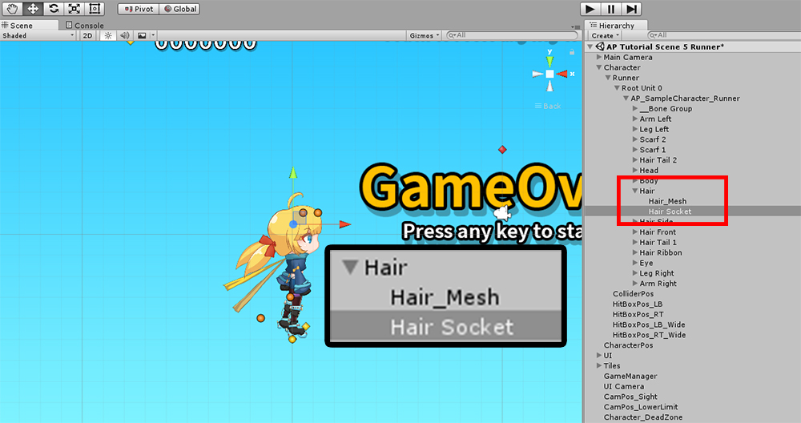
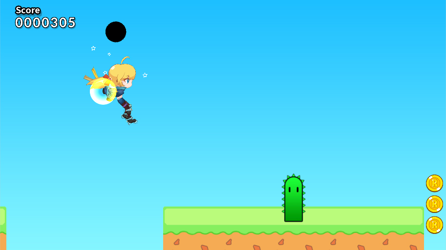

AnyPortrait > マニュアル > ソケットを使用した位置参照
ソケットを使用した位置参照
1.0.0
キャラクターの手にナイフを追加したり、頭に「Particle Effect」を追加することはゲームで一般的に見ることができる演出です。
Unityは階層構造では、これらのものをGameObjectの子として追加して簡単に実装することができます。
残念ながら、AnyPortraitのシステムは、Unityの階層計算に従わない。
AnyPortraitのシステムは、改良された計算式を使用するため、メッシュのGameObjectを参照することはできません。
(だからAnyPortraitのGameObjectsローカル座標は常に(0、0)です。)
代わりに「ソケット(Socket)」と呼ばれる機能を使用して、この問題を解決することができます。
このページには、「ソケット」を使用して、キャラクターの外部のGameObjectを付着する方法を説明します。
メッシュのソケット

(1) メッシュグループの「Setting」タブを選択します。
(2) ソケットを取り付けるメッシュを選択します。
(3) 右のUIの「Socket Disabled」ボタンを押して、「Socket Enabled」に変更します。

シーンをBakeしてシーンに行くと、選択したメッシュに「(メッシュ名)Socket」という名前のGameObjectが追加されていることがわかります。
ソケットが作成され、別のオブジェクトをアタッチできる状態になります。

私はテストとして 「Sphere」オブジェクトを追加しようとしました。
位置はやや上向きです。

あなたがゲームを実行すると、あなたの頭の上に移動「Sphere」を見ることができます。
骨のソケット

(1) 「Bone」タブを選択します。
(2) ソケットを設定骨を選択してください。
(3) 「Socket Disabled」ボタンを押して、「Socket Enabled」にします。

Bakeとチェックしてシーンに戻ります。
メッシュの場合と同様に、ソケットは 「(骨の名前) Socket」という名前で作成されています。
私はこのサンプルでは、「Particle Effect」を追加しました。

ゲームを開始すると、骨の位置に従った効果を見ることができます。